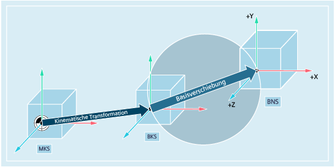

Das Basis-Nullpunktsystem (BNS) ergibt sich aus dem Basis-Koordinatensystem durch die Basisverschiebung.
Die Basisverschiebung beschreibt die Koordinatentransformation zwischen dem BKS und BNS. Mit ihr kann z. B. der Paletten-Nullpunkt festgelegt werden.
Die Basisverschiebung setzt sich zusammen aus:
Externe Nullpunktverschiebung
DRF-Verschiebung
Überlagerte Bewegung
Verkettete Systemframes
Verkettete Basisframes
Siehe auch:
Übersicht der verschiedenen Koordinatensysteme
Wie hängen die verschiedenen Koordinatensysteme zusammen?